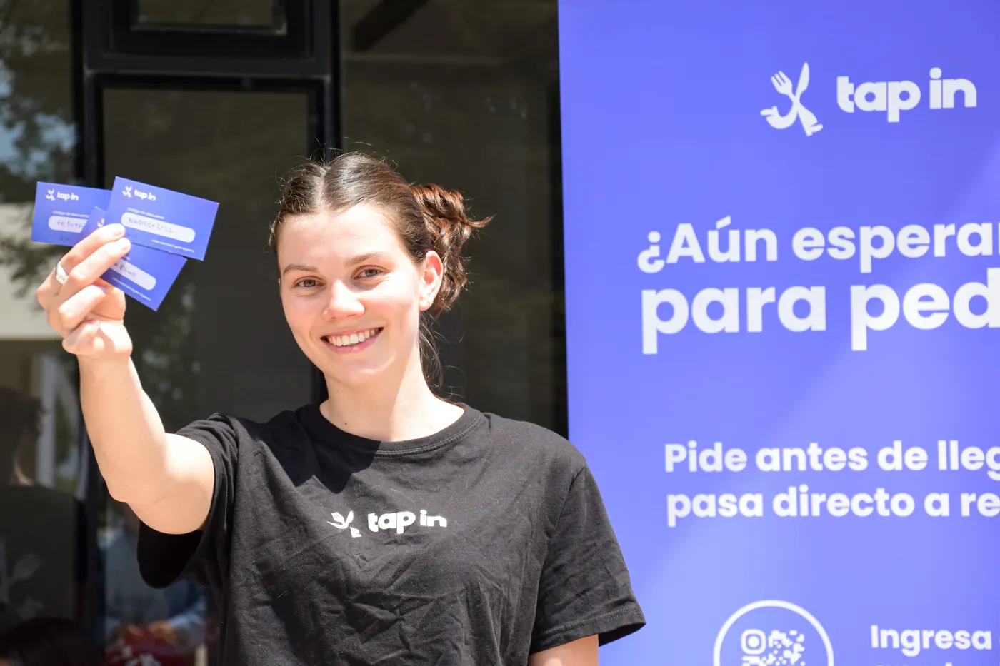

Paso a El Rebirth
Hoy es un corte seco del claro al oscuro, y la portada queda un buen rato vacía hasta que suben las tiras. Las tres versiones hacen del paso el inicio del capítulo.
De app de comida a sistema para colegios. Antes de diseñar, un cuestionario a los socios
La tarjeta de Tap In, en el stand


Hoy es un corte seco del claro al oscuro, y la portada queda un buen rato vacía hasta que suben las tiras. Las tres versiones hacen del paso el inicio del capítulo.